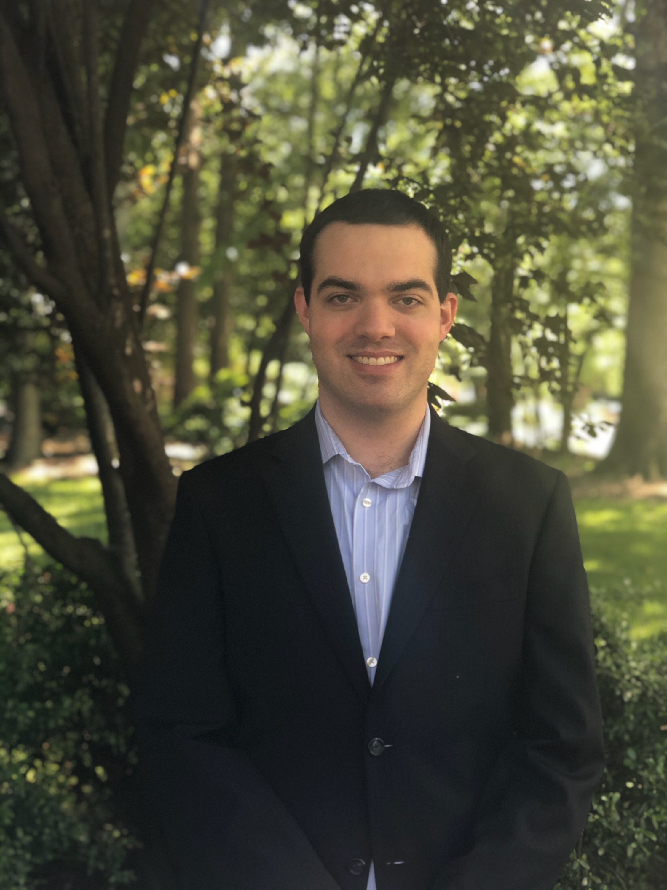

Summary
Software Developer/Engineer with 3 years of experience modifying, testing, and implementing
software changes using Java, C#, C++ languages to upgrade current software applications using Iterative
Development Methodology and have a working knowledge of Angular and Spring Frameworks using Agile Methodology.
Education
Colorado State University
B.S. Computer Science
Graduated: December 2021
-
Relevant Coursework: Programming I(Java), Programming II (Java), Programming III(C++), Database Management (MySQL),
Data Structures and Algorithms (Java), Software Engineering
Virginia Polytechnic Institute and State University
B.S. Animal and Poultry Science
Graduated: Spring 2018
Professional Experience
Freddie Mac (March 2022 - Present)
Associate Developer (March 2023 - Present)
-
Upgraded proprietary software application Loan Closing Advisor (LCLA) from Red Hat Enterprise Linux Server 7.9 to Linux Server 8.10 using Iterative Development Methodology (Java application)
-
Modified 12 configuration files, so that the new server could properly run the application
-
Configurations included ensuring the proper firewall rules and CyberArk password retrieval setup transferred from the old to new server, and that the application was properly referencing the new servers for all the system
connections (i.e., database connection, WebLogic server connection, etc.)
-
Trained 5 employees the different controls for production change tickets and how to
assess these change tickets based on the controls, so that they could evaluate production changes.
-
Upgraded proprietary software application Data Transfer System (DTS) from Windows Server 2012 to Windows
Server 2019 using Iterative Development Methodology (C# application)
-
The DTS application transfers reported financial data from one application
database to another both of which are hosted on a Sybase DB server.
-
Changed 14 properties files used within the application
-
Ensured properties referenced the new servers and all other connections were properly
configured, (i.e., database connection, batch server connection, etc.)
- Ensured firewall rules and CyberArk password retrieval were properly configured for the new servers
Technology Analyst (March 2022 - March 2023)
-
Upgraded proprietary software application, DMS Authentication and Provisioning Services (DAPS), from Windows Server 2012 to Windows Server
2019 using Iterative Development Methodology (C++ application)
-
Configured 10 files to use properties that reference all the new servers for the business application
-
Changed properties to ensure new Windows servers were being referenced and made sure all the system connections were set up
correctly (i.e., database connection, Windows IIS connection, etc.)
- Configured CyberArk password retrieval and firewall connections on 8 new servers
-
Developed new feature to allow users to look up various remediations for department’s custom software tool, ARQ (Angular front-end and Java Spring back-end) using a
form of Agile (User stories are displayed on Jira on a Kanban board)
Technical Skills
Languages: Java (Beginner), SQL, HTML5/CSS3 (Beginner), JavaScript (Beginner), C# (Beginner), C++(Beginner)
Framework: Angular (Beginner), Spring (Beginner)
Methodologies: Iterative Development Methodology (IDM), Agile
Certifications: Google Cybersecurity Certificate (In Progress)